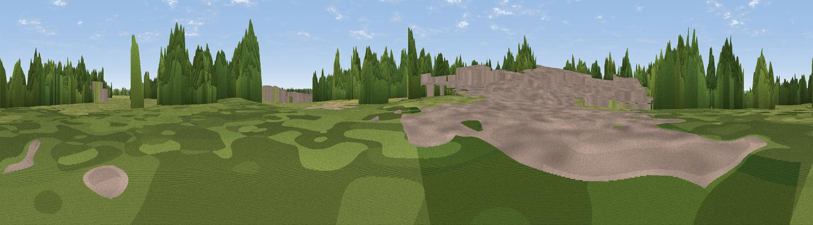

Viewpoint near Gainsborough
#42254 in England · top 82% of its area beats it · near GainsboroughWhere it is
The exact computed spot (SK 82352 91177). Click the marker for map links.
The view, rendered

A 360° render of this exact spot computed from the terrain model, tree cover and land cover — summer colours, afternoon light, calibrated against photographs of famous viewpoints. Real trees, hedges and buildings will differ in detail.
The panorama
Grey silhouette: terrain skyline in each direction (720 bearings, Earth curvature and refraction included). Dashed green: skyline with trees (+15 m) and buildings (+8 m) as obstacles. Blue strip: how far the ground is visible on each bearing.
Where the view opens
Wedge length = distance to the farthest visible ground on that bearing (vegetation-aware). Rings at 10, 25 and 50 km.
What fills the view
31% grassland · 29% cropland · 22% woodland · 17% built-up
Angular shares of the visible panorama (visual magnitude), not map area. Landscape diversity 0.60 (0–1 Shannon).
Key numbers
More beautiful places nearby
The staircase of upgrades: each row has a higher view potential than everything closer. Driving times are estimates from straight-line distance, calibrated against real road routing — check an actual route before setting out.
| Place | Direction | Drive | Score |
|---|---|---|---|
| Viewpoint near Blyton | NE · 4 km | ~10 min | 30.0 |
| Viewpoint near Gringley on the Hill | W · 8 km | ~16 min | 50.3 |
| Beacon Hill | W · 8 km | ~16 min | 63.1 |
| Viewpoint near Maltby | W · 28 km | ~44 min | 70.7 |
| Viewpoint near Claxby | E · 29 km | ~46 min | 71.5 |
| Viewpoint near Whitley | W · 50 km | ~71 min | 72.1 |
| Viewpoint near Wharncliffe Side | W · 51 km | ~72 min | 75.2 |
| Tissington Hill | WSW · 77 km | ~101 min | 75.5 |
53.41099, -0.76256 · source: osm peak · position refined by local search. Computed location — check access rights before visiting.